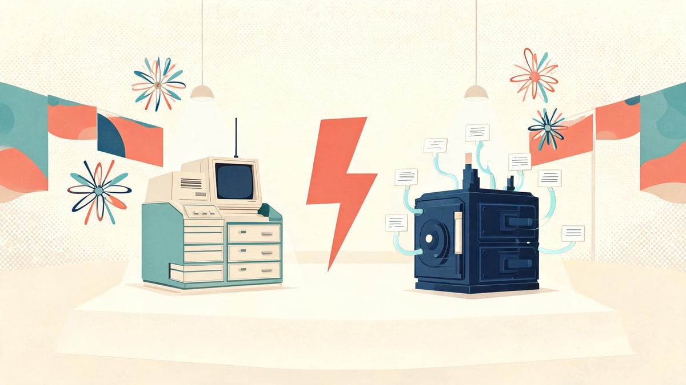
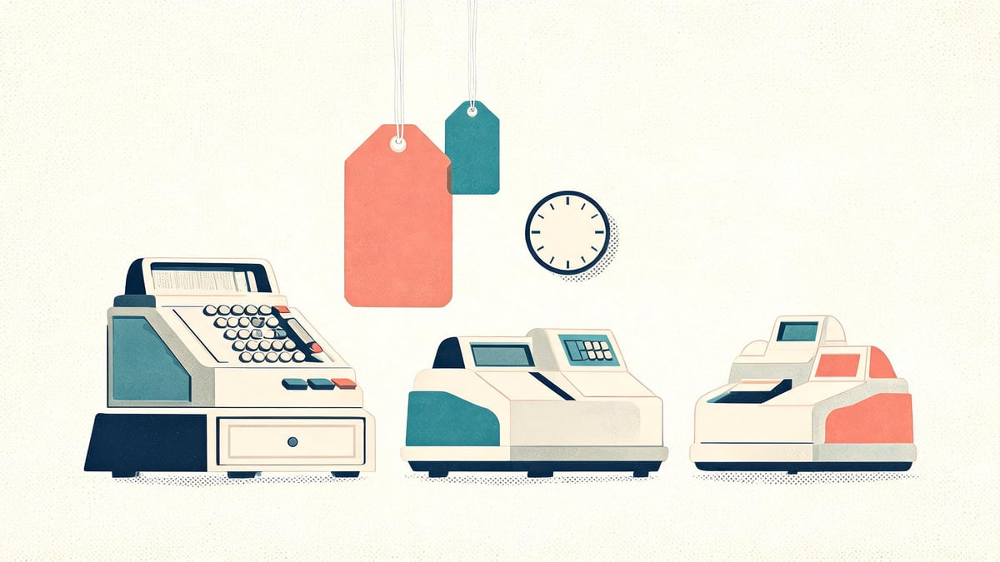
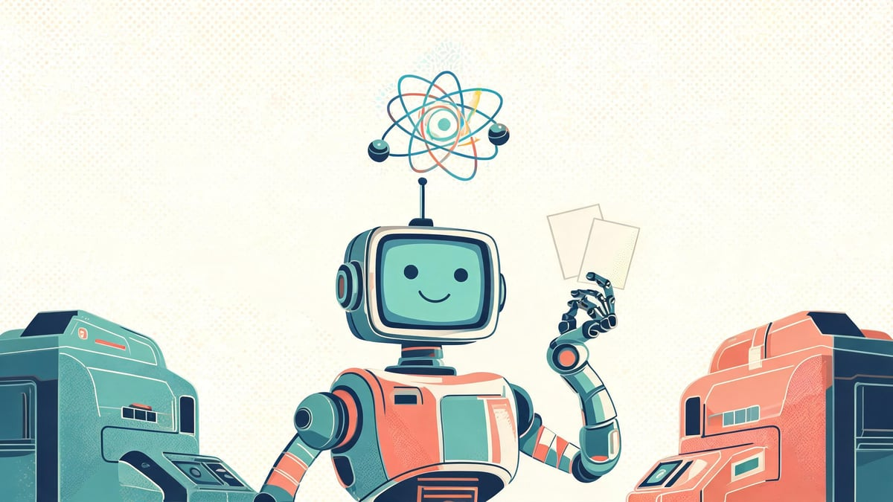
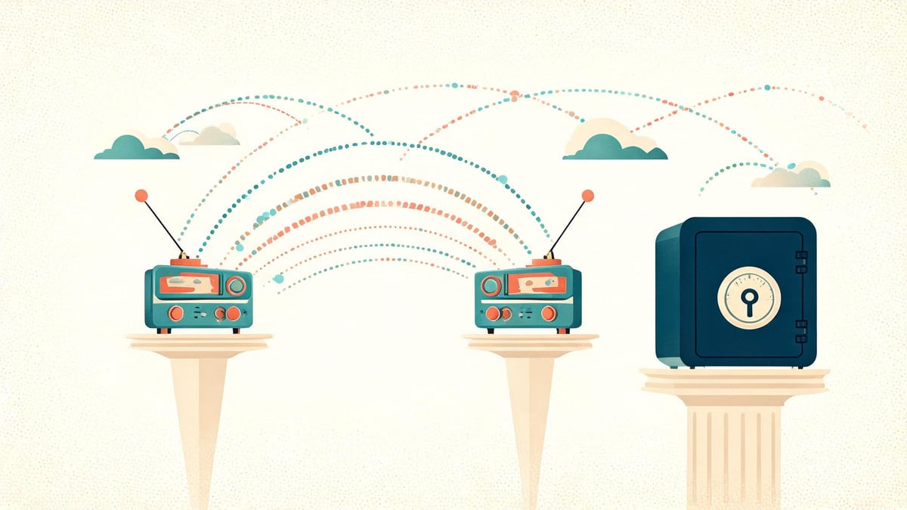
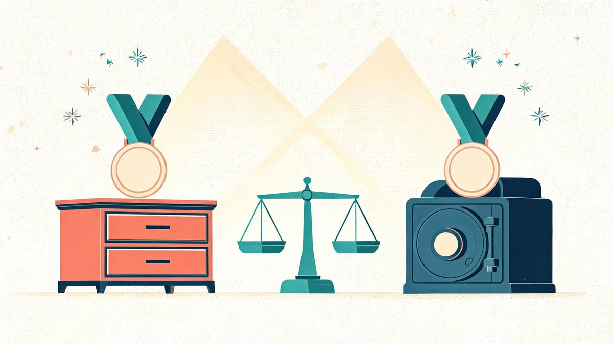

Notion vs Obsidian (2026): Pricing, Features & Honest Verdict

Notion and Obsidian take opposite bets on how your notes should live: Notion runs everything in its cloud database with slick collaboration, while Obsidian keeps plain Markdown files on your own device with a fanatical plugin ecosystem. We compared both in October 2026 across pricing (official, verified), features, AI, offline behavior, privacy, and real use cases — with a verdict for each type of reader, not a fake overall winner.
Quick answer
Notion (official pricing, Oct 2026): Free plan; Plus $10/member/mo billed annually; Business $20/member/mo with Notion AI included; AI credits $10 per 1,000. Obsidian (official): app is free for personal use ("free without limits"), Sync add-on $4/user/mo annual ($5 monthly, 1GB), Publish $8/site/mo; students get 40% off Sync. Choose Notion for team collaboration, databases, and all-in-one workspaces; choose Obsidian for private, offline, plain-text notes you own forever. Full verdicts per use case below.
In this guide
- Notion vs Obsidian at a glance
- Pricing: official 2026 plans compared
- Feature-by-feature comparison
- AI in 2026: Notion AI vs Obsidian's plugin route
- Offline, data ownership & privacy
- Collaboration & sharing
- Students & education: the 40% discount nobody mentions
- Verdicts by use case
- Can you switch? (Notion ↔ Obsidian migration)
- Frequently asked questions
Key takeaways
- Notion's paid plans run $10–$20 per member/month; Obsidian's core app is free forever for personal use — you pay only for optional Sync ($4–$8) and Publish ($8).
- Notion stores your notes in its cloud; Obsidian keeps plain Markdown files on your device that work even if the company disappears.
- Notion AI is now included with Business/Enterprise (credits $10/1,000); Obsidian routes AI through community plugins instead.
- Students get 40% off Obsidian Sync with education verification — most comparison posts never mention it.
- Best together-strategy: many users draft privately in Obsidian and publish/collaborate through Notion — they solve different problems.
Notion vs Obsidian at a glance
Both tools organize notes and knowledge, but they make the opposite bet on where your files should live. That single difference drives almost every trade-off below.
| Factor | Notion | Obsidian |
|---|---|---|
| Core model | Cloud workspace (blocks stored in Notion's database) | Local Markdown files in your vault |
| Price (Oct 2026, official) | Free · Plus $10/member/mo · Business $20/member/mo | App free · Sync $4–$8/user/mo · Publish $8/site/mo |
| Best for | Teams, databases, docs+projects in one place | Private notes, deep linking, lifelong personal wiki |
| Offline | Limited (recent pages on mobile; web needs connection) | Complete — files live on your device |
| Data ownership | Export anytime (Markdown/CSV/HTML), but the live copy is theirs | 100% yours from second one — plain text on disk |
| Collaboration | Best-in-class real-time multi-editing | Weak natively; possible via Sync + git or Publish |
| AI | Built-in: included with Business/Enterprise, credits $10/1,000 | Community plugins (Copilot, Smart Connections) + local LLMs |
| Learning curve | Gentle start, complex at scale | Steeper start (Markdown + linking habits), powerful later |
| Extensibility | Templates, forms, API, integrations | 2,000+ community plugins, themes, CSS snippets |
| Mobile apps | Mature iOS/Android apps | iOS/Android apps (desktop-first DNA) |
Pricing verified against notion.com/pricing and obsidian.md/pricing on October 20, 2026 (USD, annual billing). Regional prices vary — Notion shows €9.50/€19.50 in Eurozone markets.
Pricing: official 2026 plans compared
We pulled both pricing pages on October 20, 2026 — not from old blog posts, which is where most comparisons go stale. Here's exactly what each company charges today.
Notion pricing (verified Oct 2026)
- Free: $0 — unlimited pages and blocks for individuals; trial AI features; Notion branding on shared content.
- Plus: $10 per member/month billed annually — unlimited file uploads, custom forms, no branding. (€9.50 in Eurozone.)
- Business: $20 per member/month billed annually — Notion AI included (Agent, AI meeting notes), private teamspaces, SAML SSO.
- Enterprise: custom pricing — advanced security, controls, support.
- AI credits add-on: $10 per 1,000 monthly Notion credits for heavier automation; custom domain on Notion Sites costs $8/month billed annually.
Obsidian pricing (verified Oct 2026)
- The app: Free. Obsidian describes itself as "free and 100% user-supported" — no feature paywall for personal use, on every platform.
- Sync Standard: $4/user/month billed annually ($5 monthly) — 1 synced vault, 1 GB storage, version history.
- Sync Plus: $8/user/month billed annually ($10 monthly) — 10 vaults, 10 GB, 12-month version history.
- Publish: $8/site/month billed annually ($10 monthly) — publish your notes as a website.
- Commercial license: $50 one-time per organization using it at work (revenue-supported, not a subscription).
- Catalyst: $25+ one-time supporter tiers with early beta access — optional, purely to fund development.
| Scenario (annual billing) | Notion | Obsidian |
|---|---|---|
| Solo user, notes only | $0 (Free) or $120/yr (Plus) | $0 (app) + $0 if you sync via iCloud/git |
| Solo + multi-device sync | $0–120/yr (cloud included) | $48/yr (Sync Standard) or $96 (Plus) |
| 5-person team | $600/yr (Plus) or $1,200 (Business) | $240–480/yr (Sync) — but weak real-time collab |
| AI features | Included at Business; credits $10/1,000 | $0–15/mo via third-party API keys (bring your own) |
The pricing philosophies are opposites: Notion charges per person for collaboration features you can't opt out of; Obsidian gives the whole app free and sells only infrastructure (sync/publish) that competes with free alternatives like iCloud, OneDrive, or Syncthing. A solo user on a budget can run Obsidian at literally $0 forever — Notion's Free plan is generous but keeps you in their cloud.

Feature-by-feature comparison
Note-taking and editing
Notion's block editor is superb for structured docs — toggle lists, databases inside pages, synced blocks. Obsidian's editor is Markdown: plain, fast, and future-proof, with live preview. Writers who think in "documents" usually prefer Obsidian's frictionless flow; builders who think in "systems" prefer Notion's blocks and databases. Obsidian wins on speed and lock-in resistance; Notion wins on structure and rich embeds.
Organization: links and graphs vs databases and views
Obsidian's superpower is bidirectional linking — every note can mention another, and the graph view shows your knowledge web. Backlinks build up automatically as you write. Notion's superpower is databases: tables, boards, calendars, galleries — all filterable views over the same underlying records. For a research vault that compounds over years, Obsidian's approach ages better; for managing projects and team docs, Notion's databases are unmatched.
Customization and plugins
Obsidian has 2,000+ community plugins and full theme/CSS control — calendar, spaced repetition, dataview queries, local REST API, even full-blown apps inside notes. Notion is customizable through templates, relations, formulas, forms, and a solid API, but you can't install community-made editor plugins the Obsidian way. Power users describe it as app-store freedom vs well-designed apartment.
Search and speed
Obsidian's local search and quick-switcher are instant — everything is on disk. Notion's search has improved, but large workspaces still feel slower, and offline access on desktop web is effectively none. If you work in a train tunnel or on flights, Obsidian simply always works.
AI in 2026: Notion AI vs Obsidian's plugin route
This is the biggest 2026-era difference, and it changed recently — older comparisons are outdated here.
Notion AI (official, verified Oct 2026): included with Business and Enterprise plans — Notion Agent can do multi-step tasks across your workspace and connected apps, plus AI meeting notes and enterprise search. Lighter users buy credits at $10 per 1,000 monthly. It's deeply integrated: Q&A over your workspace, autofill databases, draft-in-place.
Obsidian's route: no official AI subscription — instead community plugins like Copilot and Smart Connections connect to any model API (OpenAI, Anthropic, local models via Ollama). You bring your own API key and pay per use — often $0–15/month total, with complete privacy control because your notes never leave your machine unless you send them. Privacy-conscious users can run AI entirely locally on their own vault. The trade-off: setup is manual, and there's no polished "AI meeting notes" experience.
Our read: teams that want zero-setup AI everywhere → Notion Business. Individuals who want AI without their notes training anyone's cloud → Obsidian + local model.

Offline, data ownership & privacy
Offline: Obsidian is fully offline-native — your vault is local files; sync happens when you connect. Notion requires connectivity for most desktop-web use (mobile apps cache recently opened pages). If offline reliability is non-negotiable, this alone decides it.
Ownership: Obsidian notes are plain .md text files readable in 30 years by any editor — no export needed because there's nothing to export from. Notion does offer complete exports (Markdown/CSV/HTML), but the live workspace only exists in their cloud; your folders-with-links and database views don't fully survive export. Obsidian is the only option where the company vanishing changes nothing about your access.
Privacy: Obsidian's Sync is end-to-end encrypted (AES-256, official) — even Obsidian can't read your notes. Notion's cloud is SOC 2-audited with fine-grained permissions, but content is by design server-side (that's what powers their AI and collaboration). There's a reason the self-hosting crowd standardizes on Obsidian: your vault can live on your own hardware with zero third party involved — a fact curiously absent from every major comparison post we analyzed.
Security reference: for the threat-model side of cloud notes, see our guide on turning off two-factor authentication safely and checking if a device is compromised — your notes are only as safe as the accounts protecting them.
Collaboration & sharing
Here Notion wins decisively, and honest comparisons say so. Real-time co-editing, comments, mentions, per-page permissions, guest access, teamspaces — it's a genuine shared workspace. Obsidian is single-player by design: collaboration means Sync (device-to-yourself), a shared folder via git, or publishing read-only sites via Obsidian Publish ($8/site/mo) or free alternatives like Quartz. Teams of 3+ who live in documents together should pick Notion; teams of writers who each keep personal vaults should not force Obsidian into a collaboration shape it doesn't have.

Students & education: the 40% discount nobody mentions
For students, both are viable — but the money math and workflows differ more than most posts admit.
- Obsidian education discount: students, faculty, and nonprofit employees get 40% off Obsidian Sync (official pricing-page FAQ) — that's Standard at roughly $2.40/month billed annually. The app itself is already free, so a student's total cost can be ~$29/year for bulletproof multi-device sync.
- Notion for education: the Free plan already covers individual students well; Notion offers a Plus-plan-with-education-email route historically, and campus organizations often standardize on Business ($20/member/mo) for the AI features.
- Workflow fit: lecture notes with quick linking → Obsidian (backlinks connect courses, concepts, and sources automatically). Group projects, shared club pages, and event planning → Notion (real-time collaboration wins). Many students run Obsidian for personal notes + Notion for anything shared — the combo costs $0.
Preparing for exams with linked flashcards? Obsidian's spaced-repetition plugins make it a quiet powerhouse. Building a CV/portfolio in a shareable page? Notion's publishable sites are easier.
Verdicts by use case
No fake overall winner — here's the honest split, use case by use case.
| If you are… | Pick | Why |
|---|---|---|
| A student on a budget | Obsidian | App free + 40% education Sync discount; notes outlive graduation |
| A researcher building a knowledge base | Obsidian | Backlinks, graph view, local AI, permanent files |
| A writer drafting books/articles | Obsidian | Markdown speed, zero lock-in, distraction-free |
| A team collaborating daily | Notion | Real-time co-editing, permissions, shared databases |
| A project/workspace builder | Notion | Databases, views, forms, templates ecosystem |
| A privacy-hardened user | Obsidian | Local files, E2EE sync, self-host everything |
| Someone who wants AI everywhere | Notion (Business) | Agent + meeting notes included, zero setup |
| A "both" power user | Both | Draft privately in Obsidian; publish/collaborate via Notion |

Can you switch? (Notion ↔ Obsidian migration)
Notion → Obsidian: export your workspace as Markdown & CSV (Settings → Export), unzip into a vault folder, and most content lands cleanly — Notion's export creates one .md file per page with CSVs for databases. Links between pages partially survive (as file references); databases become folders of notes, so heavy database users should restructure rather than expect a 1:1 move. Community tools like the Notion-to-Obsidian converter script fix most link/database rough edges.
Obsidian → Notion: import your vault folder — every .md becomes a page; wiki-links [[like this]] do not convert into Notion's link system automatically, and folder hierarchies flatten. Backlink-heavy vaults lose their magic; simple notebooks move fine.
The asymmetry matters: leaving Notion is a manageable one-time export; leaving Obsidian is trivial because nothing was ever locked. That's the practical meaning of data ownership.
Frequently asked questions
Is Notion or Obsidian better for students?
For personal study notes, Obsidian — it's free, works offline in lectures, links every concept to every other, and students get 40% off Sync. For group projects and club organization, Notion's real-time collaboration is worth it. Many students use both: Obsidian for themselves, Notion for shared work.
Is Obsidian really free?
Yes — the app is free for personal use on all platforms with no feature paywall ("free and 100% user-supported" per official pricing). Paid products are optional infrastructure: Sync ($4–$8/user/mo), Publish ($8/site/mo), a $50 one-time commercial license for workplace use, and optional Catalyst supporter tiers.
How much is Notion in 2026?
Verified October 2026: Free plan $0; Plus $10/member/month billed annually; Business $20/member/month with Notion AI included; Enterprise custom. AI credits cost $10 per 1,000 monthly. Eurozone pricing is €9.50/€19.50.
Why are people leaving Obsidian?
Mainly friction, not flaws: Markdown and linking habits take weeks to click, sync costs extra and needs setup, and people who want all-in-one workspaces (tasks + docs + databases) miss Notion's structure. People who leave usually didn't need a personal knowledge system in the first place — those who stay tend to stay for years because their notes are permanent files.
What are the downsides of Obsidian?
Real-time collaboration is essentially absent; mobile apps are weaker than desktop; there's no native AI — you configure plugins and API keys yourself; sync costs extra; and the plugin ecosystem can become a procrastination trap. It rewards tinkerers and punishes people who just want everything pre-built.
What are the downsides of Notion?
Poor offline support; per-member pricing scales fast ($10–$20/person/month); your data lives in Notion's cloud with export that doesn't perfectly preserve databases and linked structures; the block editor feels slow in very large pages; and search across big workspaces lags local tools.
Can Obsidian replace Notion?
For personal knowledge, writing, and research — yes, often better. For shared team workspaces with databases, permissions, and real-time editing — no. It replaces Notion-the-note-app, not Notion-the-team-workspace.
Can I use Notion and Obsidian together?
Yes, and it's a popular setup: draft and think privately in Obsidian (permanent Markdown files), then publish polished docs or collaborate in Notion. Some users auto-export Obsidian notes into Notion via the API. The tools genuinely solve different halves of the knowledge problem.
Is Obsidian better for privacy?
Yes, by architecture. Your notes are local plain-text files; Sync uses end-to-end encryption (AES-256) so even Obsidian can't read them; and nothing leaves your device unless you choose to sync or use an AI plugin with a cloud model. Notion is server-side by design, with SOC 2 controls — secure, but inherently a third party holds the content.
Notion vs OneNote vs Evernote vs Apple Notes — where do they fit?
Apple Notes: fastest capture, Apple-only, weakest structure. OneNote: free-form canvas notebooks inside Microsoft's ecosystem. Evernote: web-clipper veteran, weakened by pricing changes. Notion: structured team workspace. Obsidian: private, permanent, link-first personal wiki. For a comparison deep-dive across all of them, our tools coverage expands through 2026.
📚 Sources & Citations (9)
- Notion — Pricing (notion.com/pricing, USD plans verified October 20, 2026)
- Notion — Notion AI plans & credits (notion.com/product/ai, verified October 20, 2026)
- Obsidian — Pricing (obsidian.md/pricing: free app, Commercial $50, Catalyst, 40% education discount, verified October 20, 2026)
- Obsidian — Sync (obsidian.md/sync: $4/$8 annual tiers, AES-256 end-to-end encryption, version history)
- Obsidian — Publish (obsidian.md/publish: $8/site/mo annual)
- The Business Dive — Notion vs Obsidian: 7 Things I Wish I Knew (competitor landscape, October 2026)
- Slite — Obsidian vs Notion: Which tool is right for you? (factor framework reference)
- G2 Learning Hub — Obsidian vs. Notion (review-based take, LLM-integration questions)
- Google SERP — People Also Ask + AI Overview (queried October 20, 2026: why-leaving-obsidian, still-relevant-2026)
Keep exploring: If you're choosing tools for focused work, see Roku vs Fire Stick for the streaming-device version of this decision, or best noise-cancelling earbuds to pair with your deep-work setup. And for the security side of cloud accounts, read how to check if your phone is hacked.